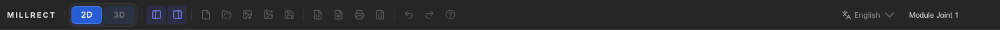

Save & Export
Project save and load, PDF / SVG export for drawings, STL export for 3D, and autosave.

Autosave
Each time you add or edit shapes, your work is saved automatically. The status bar at the bottom right shows Saved and a timestamp for the last save.
When you quit and relaunch the app, you can choose whether to resume the previous session. To keep a copy as a file in a specific location, use Save to project file below.
Project file (JSON)
Saves the entire Millrect project (all pages, layers, shapes, dimensions, registered fonts, canvas images, and settings) in one file.
Project JSON fonts[] stores Google Fonts registration data
(family, cssUrl, fileUrl, fileUrlBold, etc.).
The font library (fonts-library.json) is kept separately in app user data, not inside the project file.
See 2D Drawing — Project fonts for how to register fonts.
| Action | How |
|---|---|
| Save | Toolbar save icon / File → Save / Ctrl+S (Cmd+S on macOS) |
| Open | Toolbar folder icon / File → Open |
| New | File → New / Ctrl+N |
Choose folder and filename in the save dialog.
SVG export and import
- Export SVG — Export the current page as an SVG file (for handoff to Illustrator, etc.)
- Import SVG — Import an external SVG into a layer on the current page
SVG is for 2D drawings. Canvas images are included, but 3D data is not.
PDF export
Export all pages in the project into a single PDF file, including canvas images. Useful for printing and sharing.
Use File → Export as PDF, or the PDF icon on the toolbar.
STL export (3D)

After a solid appears following the steps in 3D Generation, click STL in the 3D panel to save an STL file for 3D printing.
You need at least two axis pages (e.g. top + front) and a visible mesh in the 3D preview.
File menu reference
| Menu item | Description |
|---|---|
| New | Start a new project |
| Open | Load a saved project |
| Save | Save the project file |
| Export as SVG | Export the current page as SVG |
| Export as PDF | Export all pages as PDF |
| Export as JSON | Export the project in JSON format |